기계가공조립기능사 (2002-07-21 기출문제)
1과목: 기계가공법 및 안전관리
1. 공작기계에 사용하는 절삭유의 작용을 열거하였다. 해당되지 않는 것은?
- 냉각작용
- 윤활작용
- 세척작용
- 탄성작용
(정답률: 95%)

2. 원판 안에 설치된 전자석을 자화시켜 일감을 고정하는 형태의 선반 척은?
- 단동척
- 압축공기척
- 연동척
- 마그네틱척
(정답률: 91%)
3. 선반에서 끝면 깎기에 쓰이는 센터는?
- 회전센터
- 하프센터
- 베어링센터
- 45° 센터
(정답률: 65%)
4. 선삭에서 절삭속도 υ = 15.7m/min 일 때, 가공물의 지름이 200mm 였다면 스핀들의 회전수는?
- 25rpm
- 50rpm
- 54rpm
- 70rpm
(정답률: 50%)
5. 선반의 크기를 나타내는 방법으로 적당치 않은 것은?
- 베드위의 스윙
- 왕복대위의 스윙
- 양센터 사이의 최대거리
- 공작물을 물릴수 있는 척의 크기
(정답률: 72%)
6. 밀링의 아버상에서 플레인 밀링 커터의 고정위치를 조절하는 것은?
- 칼라(collar)
- 아버 지지부
- 고정 너트(nut)
- 조절 링(ring)
(정답률: 50%)
7. WA46KmV 라고 표시한 숫돌에서 결합제를 의미하는 것은?
- WA
- K
- m
- V
(정답률: 73%)
8. 내연 기관의 실린더 보링 작업에 가장 적당한 가공법은?
- 호닝
- 래핑
- 방전가공
- 버핑
(정답률: 56%)
9. 사인바의 호칭치수는?
- 롤러의 직경
- 양쪽 롤러의 중심사이 거리
- 사인바의 폭
- 사인바의 전체길이
(정답률: 56%)
10. 정과 해머로 재료에 홈을 따내려고 할 때, 안전작업이 아닌 것은?
- 인접 작업자에게 파편이 안 튀게 칸막이를 한다.
- 해머에 쐐기를 박는다.
- 장갑을 끼고 작업한다.
- 해머 끝 부분의 변형을 그라인딩하여 사용한다.
(정답률: 64%)
11. 드릴 작업에서 드릴링(drilling)할 때 공작물과 드릴이 함께 회전하기 쉬울 때는 언제인가?
- 작업을 처음 시작할 때
- 구멍뚫기 작업이 거의 끝나갈 때
- 구멍을 중간쯤 뚫었을 때
- 드릴 핸들에 약간의 힘을 주었을 때
(정답률: 58%)
12. 공작기계에서 일감을 회전운동시켜서 가공하는 것은?
- 선반
- 드릴링
- 플레이너
- 밀링
(정답률: 90%)
13. 표면을 매끈하게 다듬은 공구를 일감 구멍에 압입하여 구멍 내면을 매끈하게 다듬는 방법은?
- 버핑
- 블라스팅
- 버니싱
- 텀블링
(정답률: 70%)
14. 각형구멍, 키이홈, 스플라인의 구멍등을 다듬는 데 사용되고 제품모양에 맞는 단면모양을 한 공구를 통과시켜 가공하는 기계는?
- 호빙머신
- 기어세이퍼
- 브로칭머신
- 보링 머신
(정답률: 59%)
15. 보링 머신에서 할수 없는 작업은 다음중 어느 것인가?
- 바깥지름 깎기
- 나사 깎기
- 테이퍼 깎기
- 구멍 깎기
(정답률: 45%)
16. 접시 머리 볼트의 머리가 묻히도록 하는 작업은?
- 카운터 싱킹
- 카운터 보링
- 리밍
- 스폿 페이싱
(정답률: 75%)
17. 바이트에서 칩브레이커를 붙이는 이유는 무엇인가?
- 선반에서 바이트의 강도를 높이기 위하여
- 절삭속도를 빠르게 하기 위하여
- 바이트와 공작물의 마찰을 적게하기 위하여
- 칩을 짧게 끊기 위하여
(정답률: 93%)
18. 절삭유의 작용과 관계없는 것은?
- 세척작용
- 윤활작용
- 냉각작용
- 부식작용
(정답률: 86%)
19. 선반가공에서, 내경이 큰 파이프의 바깥 원통면을 깎는데 사용되는 맨드릴은 어느것인가?
- 팽창식 맨드릴
- 조립식 맨드릴
- 표준 맨드릴
- 테이퍼 맨드릴
(정답률: 29%)
20. 0.01 mm 까지 측정할 수 있는 마이크로미터 나사의 피치와 딤블의 눈금에 대하여 옳게 설명한 것은?
- 피치가 0.5 mm 이고, 원주는 50등분 되어있다.
- 피치가 1 mm 이고, 원주는 50등분 되어있다.
- 피치가 0.5 mm 이고, 원주는 100등분 되어있다.
- 피치가 1 mm 이고, 원주는 200등분 되어있다.
(정답률: 48%)
2과목: 기계재료 및 요소
21. 다음 측정기 중 진직도를 측정하는 데 사용되는 것은?
- 정반
- 투영기
- 피치게이지
- 핀게이지
(정답률: 53%)
22. 연삭숫돌의 결합도가 다음 중 가장 높은 것은?
- EFG
- MNO
- PQR
- UWZ
(정답률: 69%)
23. 기어 세이빙(gear shaving)에 대한 가공법을 바르게 설명한 것은?
- 특수한 기어를 제작하는 기계
- 기어 절삭공구를 다듬는 기계
- 가공된 기어를 열처리하는 기계
- 가공된 기어면을 고정밀도로 다듬는 기계
(정답률: 61%)
24. 핸드 탭 작업에서 2번 탭까지 사용하여 가공 하였을 때 전체적인 가공율은 얼마인가?
- 25%
- 55%
- 65%
- 80%
(정답률: 49%)
25. 수평 및 만능 밀링머신의 기둥면에 설치하여 주축의 회전운동을 공구대의 왕복 운동으로 변환시키는 장치는?
- 슬로팅 장치
- 만능 밀링 장치
- 수직 밀링 장치
- 래크 밀링 장치
(정답률: 62%)
26. 아래 그림은 옵티컬 플랫으로 평면을 투사한 결과 나타난 것이다. 요철면을 가장 많이 나타낸 것은?
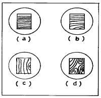
- a
- b
- c
- d
(정답률: 56%)
27. 선반 부품에 해당되는 것은?
- 메탈 소오
- 파이프 센터
- 스웨이지 블록
- 스테이크
(정답률: 66%)
28. 리드 스크루 4산/1인치의 선반에서 11산/1인치의 나사를 깎을 때, 변환기어를 결정하시오. (단, A = 주축쪽의 주동 기어, B = 리드 스크루의 종동 기어이다.)
- A = 20, B = 90
- A = 30, B = 100
- A = 40, B = 110
- A = 50, B = 120
(정답률: 59%)
29. 호빙머신에서 기어의 소재를 가공할 때, 기어소재의 중심과 아버의 중심은 어떻게 설치 고정하여야 되겠는가?
- 소재의 중심과 아버의 중심이 편심지게 고정 한다.
- 소재의 중심과 아버의 중심이 동심이 되게 고정한다.
- 기어소재의 중심과 아버의 중심은 별로 관계 없다.
- 소재의 중심과 아버의 중심이 상하로 편심지게 고정 한다.
(정답률: 62%)
30. 표면 거칠기 측정법의 방식에 해당 되지 않는 것은?
- 수준기식
- 광절단식
- 현미 간섭식
- 촉침식
(정답률: 35%)
31. 밀링 커터로 연강을 절삭하려 한다. 1 날당 이송량을 0.15 mm로 하고 12날의 커터로 매분 150회전 시킬 때, 테이블의 이송 속도는 몇 mm/min 인가?
- 80
- 150
- 270
- 350
(정답률: 63%)
32. 캠 절삭을 할 때 사용하는 밀링 머신은?
- 평행 밀링 머신
- 수평 밀링 머신
- 모방 밀링 머신
- 나사 밀링 머신
(정답률: 43%)
33. 수직 밀링 머신 작업의 종류가 아닌 것은?
- 정면 밀링 커터에 의한 평면 가공
- 엔드 밀에 의한 단 및 홈 가공
- 플레인 밀링 커터에 의한 평면 가공
- 더브테일 커터에 의한 더브테일 홈 가공
(정답률: 54%)
34. C N C 공작기계에서 백래쉬(Backlash)의 오차를 줄이기 위해 사용하는 기계 부품은?
- 유니파이 스크류
- 볼 스크류
- 사각나사
- 리드 스크류
(정답률: 70%)
35. KS규격 안전색 중 파랑색의 표지 의미 및 목적은?
- 지시 표지
- 금지 표지
- 주의 표지
- 안전 표지
(정답률: 73%)
36. 다음 중 체심입방격자에 해당하는 금속으로만 이루어진 항은?
- Al, Pb
- Mg, Cd
- Cr, Mo
- Cu, Zn
(정답률: 46%)
37. 다음 강의 표면 경화법 중 물리적인 방법에 해당하는 것은?
- 침탄법
- 금속 침투법
- 화염 경화법
- 질화법
(정답률: 46%)
38. 7ㆍ3 황동이란?
- 구리 70% , 주석 30%
- 구리 70% , 아연 30%
- 구리 70% , 니켈 30%
- 구리 70% , 규소 30%
(정답률: 76%)
39. 마그네슘의 성질에 대한 설명으로 틀린 것은?
- 비중이 1.74 로서 실용금속 중 가벼운 금속이다.
- 표면의 산화마그네슘은 내부의 부식을 방지한다.
- 산, 알칼리에 대해 거의 부식되지 않는다.
- 망간의 첨가로 철의 용해작용을 어느 정도 막을 수 있다.
(정답률: 54%)
40. 다음 그림과 같은 용접의 인장응력 계산식은? (단, W : 인장하중(kgf), ℓ : 용접부 길이(mm), t : 용접부 목 두께(mm), σ : 인장응력(kgf/mm2)이다.)
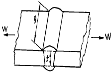
- σ = W/tℓ
- σ = Wℓ/t
- σ = 6W/t2ℓ
- σ = 6W/tℓ2
(정답률: 44%)
3과목: 기계제도(절삭부분)
41. 두축의 회전방향이 같으며, 높은 감속비의 경우에 쓰이며, 원통의 안쪽에 이가 있는 기어는?
- 내접 기어
- 하이포이드 기어
- 크라운 기어
- 스퍼 베벨 기어
(정답률: 57%)
42. 모듈이 같은 두 기어가 외접하여 서로 물려 있다. 두 기어의 잇수가 30, 50 이고 축간거리가 80 mm 일때, 모듈은?
- 4
- 3
- 2
- 1
(정답률: 47%)
43. 탄소 공구강이 구비해야 할 조건이 아닌 것은?
- 열처리성이 양호할 것
- 내마모성이 클 것
- 고온 경도가 클 것
- 내충격성이 작을 것
(정답률: 61%)
44. 평행한 두 축 사이에서 외접하거나 내접하는 2개의 원통형 바퀴에 의하여 동력을 전달하는 것은?
- 홈붙이 마찰차
- 원뿔 마찰차
- 원통 마찰차
- 변속 마찰차
(정답률: 70%)
45. 합금강에서 0.28 ∼ 0.48 %의 탄소강에 약 1 ∼ 2 %의 Cr을 첨가하여 Cr에 의한 양호한 담금질성과 뜨임 효과로 기계적 성질을 개선한 구조용 합금강은?
- Ni-Cr 강
- Cr 강
- Ni-Cr-Mo 강
- Cr-Mo 강
(정답률: 35%)
46. 푸아송의 비(poisson's ratio)에 관한 설명으로 틀린 것은?
- 탄성 한도 이내에서는 일정한 값을 가진다.
- 주철의 푸아송의 비가 납보다 크다.
- 푸아송의 수와 역수 관계에 있다.
- 가로 변형률과 세로 변형률과의 비이다.
(정답률: 48%)
47. 나사 곡선을 따라 축의 둘레를 한 바퀴 회전하였을 때 축 방향으로 이동하는 거리를 무엇이라 하는가?
- 나사산
- 피치
- 리드
- 나사홈
(정답률: 78%)
48. 다음 중 캠의 종류가 아닌 것은?
- 판 캠
- 직동 캠
- 반대 캠
- 구름 캠
(정답률: 55%)
49. 응력의 단위를 올바르게 표시한 것은?
- kgf/mm3
- m/s2
- kgfㆍmm
- N/mm2
(정답률: 56%)
50. 원동차의 직경이 100mm, 종동차의 직경이 140mm, 원동차의 회전수가 400rpm일 때 종동차의 회전수는?
- 300 rpm
- 200 rpm
- 560 rpm
- 286 rpm
(정답률: 32%)
51. 다음 그림에서 G 의 기호는 무엇을 표시하는가?
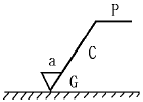
- 가공 방법의 약호
- 가공 기계의 약호
- 파상도 약호
- 가공 모양의 기호
(정답률: 63%)
52. 스퍼 기어제도에서 정면도의 이끝선과 측면도의 이끝원은 무슨 선인가?
- 굵은 실선
- 파선
- 일점 쇄선
- 이점 쇄선
(정답률: 57%)
53. 그림과 같이 테이퍼의 각도가 큰 공작물을 선반복식공구대를 회전시켜 가공하려면 공작물을 몇도 회전시켜 가공해야 하는가?
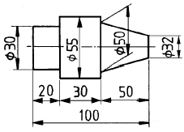
- tan-1 0.09
- tan-1 0.18
- tan-1 2.1
- tan-1 0.36
(정답률: 51%)
54. 보기의 입체도를 3각법으로 가장 적합하게 투상한 것은?
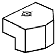
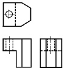
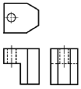
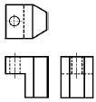
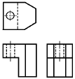
(정답률: 70%)
55. 보기 입체도를 제3각법으로 올바르게 투상한 투상도는?
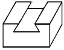
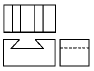
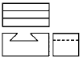
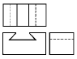
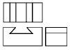
(정답률: 83%)
56. 보기 도면은 원통에서 사각 홈이 관통한 형상의 우측면도이다. 다음 중 정면 투상도로 가장 적합한 것은?
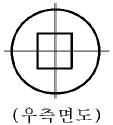
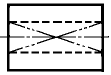
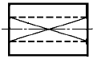
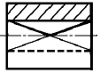
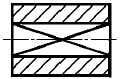
(정답률: 51%)
57. 다음 그림에서 A 부의 치수는 얼마인가?
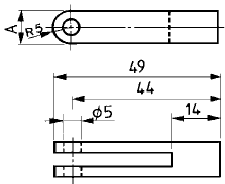
- 5
- 10
- 15
- 14
(정답률: 68%)
58. 보기와 같은 기하공차 기호에서 기호의 의미로 가장 적합한 것은?
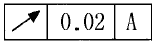
- 원주 흔들림 공차
- 진원도 공차
- 온 흔들림 공차
- 경사도 공차
(정답률: 53%)
59. 일반구조용 압연 강재 재료 기호 SS 330에서 330 이 나타내는 의미는?
- 재료의 최대 인장강도 330 kgf/mm2
- 재료의 최저 인장강도 330 N/mm2
- 재료의 최저 인장강도 330 kgf/cm2
- 재료의 최대 인장강도 330 N/cm2
(정답률: 37%)
60. 보기와 같은 암나사 관련부분의 도시 기호의 설명으로 틀린 것은?(오류 신고가 접수된 문제입니다. 반드시 정답과 해설을 확인하시기 바랍니다.)
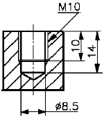
- 드릴의 지름은 8.5mm
- 암나사의 안지름은 10mm
- 드릴 구멍의 깊이는 14mm
- 유효 나사부의 길이는 10mm
(정답률: 21%)